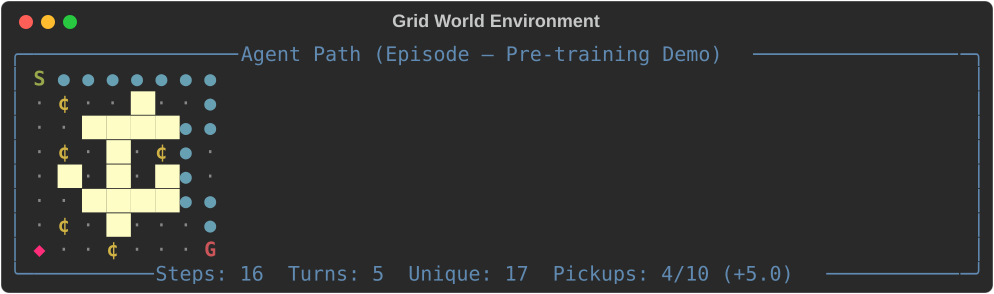
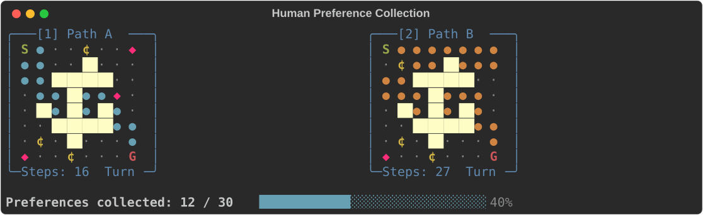
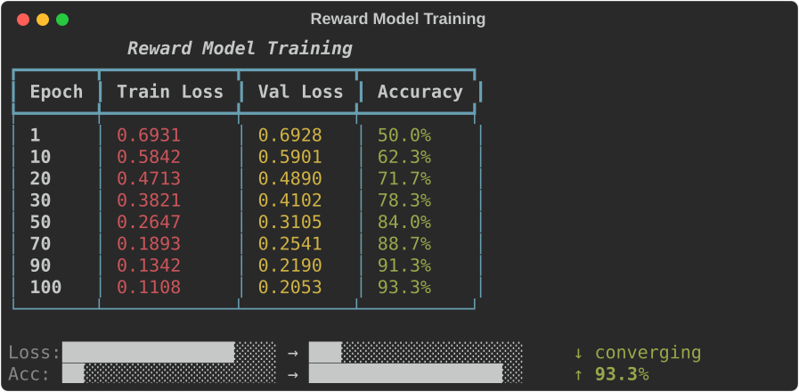

01 — Path-Finding Preference Game
An interactive terminal demo of Reinforcement Learning from Human Feedback (RLHF) applied to grid-world navigation. Every step mirrors the LLM alignment pipeline — you are the human annotator. Pre-train an agent, rate trajectory pairs, train a Bradley-Terry reward model, and PPO fine-tune with KL penalty. Built with PyTorch + Rich. No GPU required. Runs in ~2 minutes.
What Happens
The game walks you through the four-phase RLHF pipeline, with full visibility into what's happening at every step.
Phase 1: Pre-training
The agent learns basic navigation on an 8×8 grid with a three-corridor obstacle layout using a simple hand-coded reward (+10 for reaching the goal, −0.01 per step). This is analogous to LLM pre-training — the model learns basic competence before being aligned.
The grid contains collectible pickups scattered along different routes:
- Coins (
+0.5reward each) — placed on common paths - Gems (
+2.0reward each) — placed on detour routes, creating exploration tradeoffs
You'll see:
- The grid with the agent's evolving path, showing walls, pickups, and collection stats
- Training metrics with sparkline trends (reward, goal rate, steps, losses, entropy)
- After training: a policy arrow map (greedy action at every cell), a value heatmap V(s), and a neural network forward pass visualization
#1 Grid World Environment
The 8×8 grid with a demo trajectory after pre-training. Cyan dots show the agent's path from start (S) to goal (G), collecting coins and gems along the way. Stats show steps, turns, unique cells visited, and pickups collected.

Phase 2: Human Preference Collection
Two trajectories are shown side-by-side. You pick which path you prefer (or skip). Repeat 30 times. This is exactly what human annotators do when rating LLM responses.
You'll see:
- Side-by-side grids with path statistics (steps, turns, unique cells, pickups collected)
- Your evolving preference patterns (e.g. "you tend to prefer shorter paths, fewer turns")
- A progress bar and running tallies
Your choices matter: The reward model in Phase 3 learns entirely from your preferences. If you prefer scenic gem-collecting routes, the agent will learn to take detours. If you prefer efficiency, it will learn the shortest path.
#2 Human Preference Collection
A preference pair from Phase 2. Two trajectories are displayed side-by-side with full path statistics. The annotator (you) picks which path is better — this is the same interface used to collect human feedback for LLM alignment.

Phase 3: Reward Model Training
A neural network (the reward model) learns to predict your preferences using the Bradley-Terry model: P(A ≻ B) = σ(R(A) − R(B)). This is the same math used in RLHF reward models for LLMs.
You'll see:
- RM architecture diagram
- Loss/accuracy curves as it learns
- A learned reward heatmap showing what the RM thinks is valuable at each grid cell
- Spot-checks of RM predictions against your actual labels
#3 Reward Model Training
The RM architecture, training metrics (loss and accuracy curves with sparklines), a learned reward heatmap r(s) showing which grid cells the RM values most, and a spot-check comparing the RM's preference prediction against the human label.

Phase 4: RLHF / PPO Fine-tuning
PPO optimises the agent's policy against the learned reward model, with a KL penalty to stay close to the pre-trained behaviour. This is identical to the RLHF step in LLM training (InstructGPT, ChatGPT, Claude, etc.).
You'll see:
- Pre-trained vs RLHF paths side-by-side, updating in real time
- RM score and KL divergence trends
- After training: neural network forward pass with reference comparison, and a policy diff showing exactly which cells changed
#4 PPO Fine-Tuning with KL Penalty
The PPO fine-tuning dashboard. Training metrics (RM score, goal rate, KL divergence, entropy) with sparkline trends. A value heatmap V(s) from the RLHF policy, and the greedy policy arrow map showing the learned navigation strategy.

Conclusion
Final evaluation comparing pre-trained and RLHF policies across 50 episodes, the alignment tax (KL divergence cost), and a table mapping every step to its LLM equivalent.
#5 Pre-training vs RLHF Policy
Three-column policy comparison (pre-trained arrows, RLHF arrows, diff), a results summary table with metrics and percent change, and the full LLM parallel mapping table showing how every game step corresponds to real LLM alignment.

Playing Around
Here are ways to experiment and build deeper intuition:
Changing your preference strategy
Run python app.py multiple times with different annotation strategies in Phase 2:
- Efficiency-only: Always pick the shorter path. The agent will converge to the BFS-optimal route.
- Gem hunter: Always pick whichever path collects more gems. Watch the agent learn to take detours to high-value pickups.
- Scenic routes: Pick paths that visit more unique cells. The agent will learn to explore.
- Random/ties: Pick randomly or skip everything. The RM will have low accuracy and the RLHF phase will show noisy, unstable behaviour — a great demonstration of why annotation quality matters.
Tuning hyperparameters
Edit the config block at the top of app.py:
PRETRAIN_EPISODES = 150 # More episodes = stronger pre-trained baseline
NUM_PREFERENCE_PAIRS = 30 # More pairs = better RM accuracy
RM_EPOCHS = 100 # Reward model training epochs
RLHF_EPISODES = 100 # RLHF fine-tuning episodes
KL_COEFF = 0.2 # KL penalty coefficient (beta)Key experiments
- Set
KL_COEFF = 0.0— removes the KL penalty entirely. Watch for reward hacking: the agent exploits the RM's blind spots. - Set
KL_COEFF = 2.0— very strong KL constraint. The agent barely moves from pre-trained behaviour, demonstrating the alignment tax tradeoff. - Set
NUM_PREFERENCE_PAIRS = 5— very few preferences. The RM trains on minimal data, leading to poor generalisation.
Observing specific phenomena
| Phenomenon | How to trigger | What to look for |
|---|---|---|
| Reward hacking | Set KL_COEFF = 0.0 | RM score climbs but paths look wrong |
| Alignment tax | Compare final KL at different KL_COEFF values | Higher beta = lower KL but less adaptation |
| Mode collapse | KL_COEFF = 0.0 + few preferences | Agent loops or oscillates |
| Exploration failure | PRETRAIN_ENTROPY_COEFF = 0.001 | Agent only uses one corridor |
| RM inaccuracy | NUM_PREFERENCE_PAIRS = 3 | Low RM accuracy, noisy RLHF |
LLM Parallel Mapping
| What you do in the game | What happens in LLM RLHF |
|---|---|
| Pre-train agent on grid rewards | Pre-train LLM on internet text (next-token prediction) |
| Rate pairs of paths | Annotators rate pairs of model responses |
| Train reward model on preferences | Train RM on comparison data (Bradley-Terry) |
| PPO with KL penalty (β) | PPO fine-tune LLM with KL penalty against SFT policy |
| Agent adopts YOUR path style | LLM adopts human-preferred response style |
| Reward hacking when β = 0 | LLM gaming metrics when KL constraint removed |
| Gems on detour routes | High-quality but costly responses (longer, more detailed) |
| Alignment tax (KL cost) | Quality-diversity tradeoff in aligned models |
Architecture
Grid World (env.py)
- 8×8 grid with start at
(0,0)and goal at(7,7) - Three-corridor wall layout forcing path choices
- Collectible pickups: 7 coins (+0.5 each) and 3 gems (+2.0 each)
- Pickups disappear on collection and reset each episode
- BFS shortest-path computation for reachability checks
Policy Network (policy.py)
- Input: normalised
(row/size, col/size)position - Architecture:
Linear(2, 64) → ReLU → Linear(64, 64) → ReLU → Linear(64, 5) - Output: 4 action logits (N/S/E/W) + 1 state value
- PPO with clipped surrogate, GAE (λ=0.95), entropy bonus
Reward Model (reward_model.py)
- Same input/architecture as policy, but outputs scalar reward per state
- Bradley-Terry loss:
P(A ≻ B) = sigmoid(R_A − R_B) - Supports tie labels (label = 0.5)
Preference Database (preferences.py)
- Stores
(trajectory_A, trajectory_B, label)tuples - Analytics: count by preference, pattern detection, summary stats
Training Orchestrator (train.py)
pretrain(): PPO against hand-coded env rewardstrain_rm(): Bradley-Terry RM training looprlhf_train(): PPO against RM scores + KL penalty
Visualisation (viz.py)
- All rendering via Rich (no external display needed)
- Grid rendering, policy arrows, value/reward heatmaps, sparklines, neural network forward pass diagrams, preference pair display
Project Structure
01-pathfinding-preference-game/
├── app.py # Main interactive terminal application (544 lines)
├── env.py # 8×8 grid world with pickups (385 lines)
├── policy.py # MLP policy + value network with PPO (470 lines)
├── reward_model.py # Bradley-Terry neural reward model (275 lines)
├── preferences.py # Preference database with analytics (194 lines)
├── train.py # Training orchestrator — all 4 phases (386 lines)
├── viz.py # Rich terminal rendering (589 lines)
├── requirements.txt # torch, numpy, rich
└── tests/
├── test_env.py # 69 tests
├── test_policy.py # 33 tests
├── test_preferences.py # 27 tests
├── test_reward_model.py # 27 tests
├── test_viz.py # 37 tests
└── test_integration.py # 8 tests
# 201 tests totalKey Concepts Demonstrated
- Bradley-Terry preference model — the mathematical foundation of RLHF
- PPO clipped surrogate — the optimisation algorithm used in ChatGPT, Claude, etc.
- KL divergence penalty — prevents reward hacking / mode collapse
- Reward overoptimisation — observable when beta is set to zero
- Generalised Advantage Estimation (GAE) — variance reduction in policy gradients
- Alignment tax — the KL divergence cost of adapting to human preferences
- Exploration vs exploitation — entropy bonus encourages corridor discovery
Quick Start
# From the repo root
cd coding-adventures/01-pathfinding-preference-game
# Install dependencies (if not using the repo venv)
pip install -r requirements.txt
# Run the game
python app.pyYou'll be guided through all four phases interactively. Press Enter to advance between sections.
Running Tests
# All 201 tests (~9 seconds on CPU)
python -m pytest tests/ -v
# Quick smoke test
python -m pytest tests/ -x -q